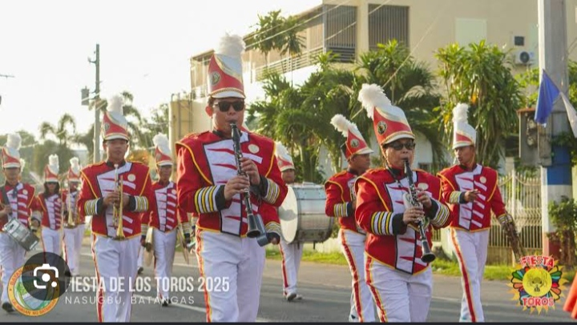

Fiesta Gallery
Welcome to our Nasugbu Fiesta Gallery! Explore the beautiful moments, colorful celebrations, and wonderful traditions of Nasugbu, Batangas.
Fiesta Highlights

Grand Parade
A colorful parade filled with music, decorations, and joyful celebrations.

Church Celebration
A celebration of faith and devotion during the town fiesta.

Cultural Dance
Traditional dances showcasing the culture and heritage of the community.

Food Fair
Delicious local foods and special Filipino dishes shared during the fiesta.

Drum and Lyre
Energetic musical performances that bring excitement to the celebration.